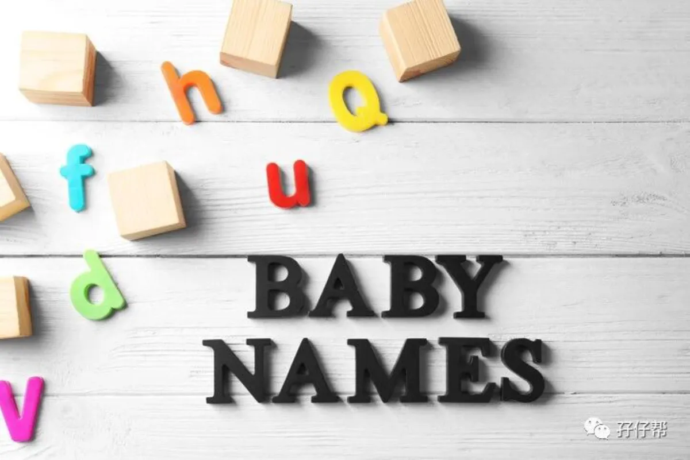
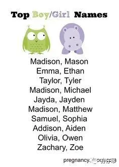
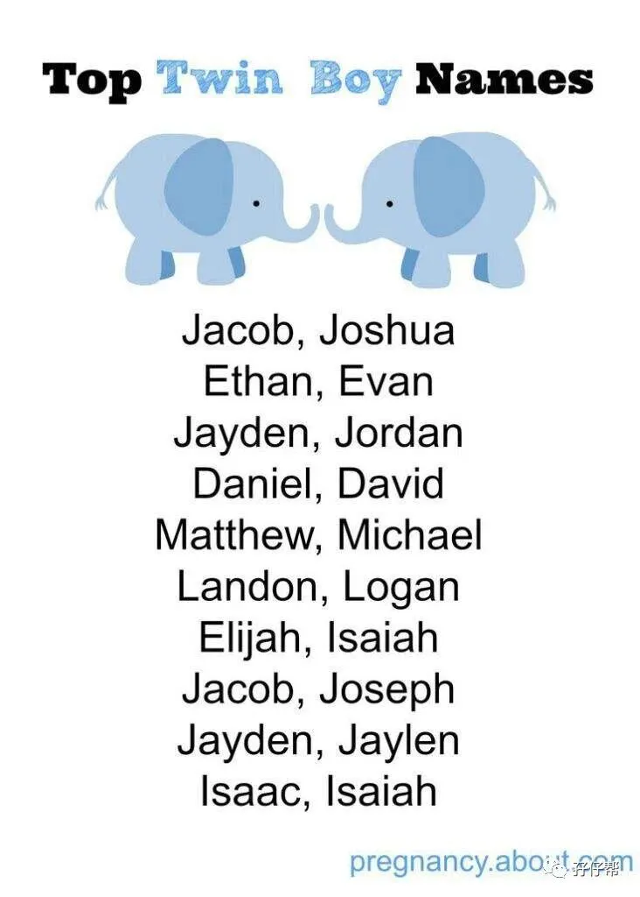
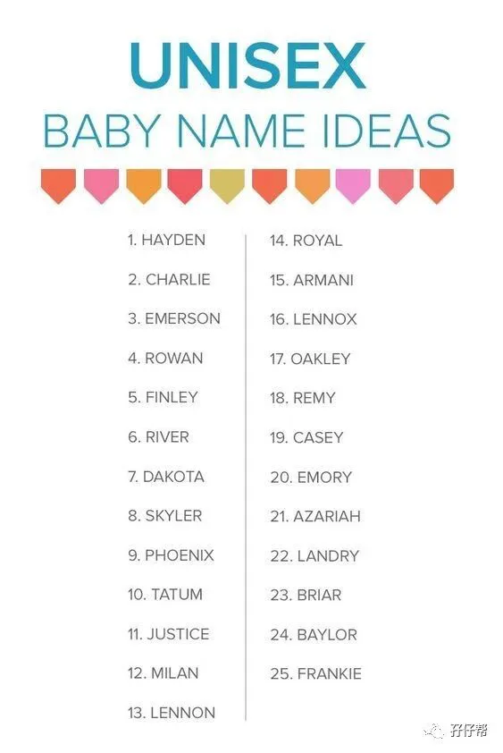

文|圆圈妈
图|来自网络，侵删
· 正 · 文 · 来 · 啦 ·
相比双胞胎的小名，双胞胎的真实姓名更让人“幸福感”加倍（注意是双引号）， 毕竟，在部分人眼里，姓名会影响一个人毕生的运势！万万不可马虎！
双胞胎的姓名因其特殊性，又给取名字增加了难度，担心名字烂大街或与长辈的重复，希望两宝宝的名字既要有区别，又要相关联！真是“幸福”到五体投地！
难怪说，给双胞胎取名字是个甜蜜的负担！
这期推文将会探讨双胞胎的大名，主要给那些有取名选择综合征的父母一点小提示，但不涉及五行八卦，命理学方面的研究。
（因为…我说了你也不信呀！）
【1】
双胞胎取名字的巨坑：选形近字
虽然我不懂得天文地理，不晓得五行八卦，可是我知道1+1等于2，说说这样腐朽的我在双胞胎取名字上踩的坑，哦，不对！是地雷！
我一直觉得双胞胎的姓名一定要相关联才有点意思，于是取名字时，我专门找那些形旁和声旁很相似的词语，只是觉得有趣，为了搞特殊，显摆…
双胞胎圆圈兄弟的姓氏均随父姓，名字结构由三个字组合而成，中间的字一样，第三个字极端相似，请看小屏幕…
一个“政”
一个“致”
偏旁部首几乎一样，正如他们的相貌一样，若不仔细找不同点，稍微写潦草一点或自身有脸盲综合征，压根分不清谁是谁！
这样取名字，看似做到了双胞胎名字相关联，但给我们父母包括孩子们日后上学带来很多不便，尴尬，麻烦…
社康的护士每次看到疫苗本就轰炸我，“干嘛给我两个一模一样的疫苗本！”
看病挂号，医生的翻白眼，“这怎么是两本一样的病例！”
办银行卡，大堂经理的困惑，“你小孩怎么会有两个身份证。”
入园上学，更惨！
每逢遇到诸如幼儿体检，亲子活动签到，领成长补贴等需要用到姓名的地方，我就怕！因为每次签到完，我就会听到一句话：这位家长，为什么你孩子的姓名要写两遍啊！
好尴尬，真想怼回去，“这位老师，你能不能仔细看清楚，那是不同的姓名！”可是自己造的孽啊，只好认怂了！
取名不当给我的家庭带来诸多不愉快，恐怕以后还有很多无法想象的囧事发生，等圆圈兄弟会写字了，接触到更多了，也会陆续被各自的姓名困扰着，我已经能脑补他们轰炸我的画面了：妈妈，你干嘛给我们取那么像的名字！？（瑟瑟发抖中！）
【02】
如何给双胞胎取相关联的名字
我们这一届父母大都爱玩，这好不容易又碰上双胞胎，怎么着也得放飞自我一番。
我想，许多父母应该都有那点小心思，就是想给孩子们取一个双胞胎般的姓名，哪怕不相似也必须要相关联！
这里摘录一些网红案例和双胞胎微信社群里宝爸宝妈讨论的结果，总结到一些小提示，仅供参考哈！
巧用成语或叠词
想要让被人一听名字就知道是双胞胎，那用成语或叠词是最好的办法，既能看出差别，又能体现名字间的相关联，如：千娇&百媚，任重&道远（网红案例）
SO，若觉得孕期无聊就多翻翻成语词典吧，那些寓意美好，语意连贯性强的成语都可以参考下！
孕期时，经常有顺丰小哥帮我搬货，于是我感激涕零地想到一组备胎名字：一帆&一顺（一帆风顺），可是队友说，两个有IT 基因的崽儿们，应该跟着马化腾的方向走，而不是王卫！
…##…结果他们哥俩最擅长玩泥沙！
用家族字辈
有些地方的习俗是男丁的姓名必须带有字辈，圆圈兄弟的字辈是“先”字辈，但我们觉得不好听，而且很难与其他字组合一起，比如我能想到的一组名字就是：哥哥叫“先生”，弟弟叫“后生”（…实力坑娃的圆圈妈，还好悬崖勒马了！）于是否决了！
如果你家的双胞胎男孩被长辈要求必须带有字辈，可是你又恰好跟这个字辈“有仇”！（觉得很怪，很俗，很OUT，反正就是很！抗！拒！）只想按自己的方式给孩儿们命名！
那么你有两个方案：要么择其一为大方向，并坚持贯彻落实方针政策，坚决不动摇，意思是不管双方原生家庭那些言语轰炸多么激烈，你都能视若无睹，如果你心软了，犹豫了，纠结了，那也没关系，你还有第二个法子：拟定两组名字，一组用于身份证入户，一组用于载入族谱（圆圈兄弟就是用这个方案）
有纪念意义的地方，节日或词组
若不考虑五行八卦，生辰八字那些玄乎乎的东西，那双胞胎名字完全可以按照小两口的喜好DIY。
比如你们度蜜月去了密西西比河看鳄鱼，还在那里怀上了双胞胎，那么有纪念意义，俩娃的名字就可以这样取“*密西”&“*西比”
比如你们是在七夕那天一见钟情的，又在七夕那天得知怀上双胞胎，那可以这样组合“*小七”&“*小夕”
【4】
起名字软件和相关网站有帮助吗？
前段时间有起名字网站找到圆圈妈谈合作，因此顺势了解到这类行业的一些相关信息。
取名字软件内的系统和字库都大同小异，很容易重名，不是说不能参考，只能说不要照搬照抄，你可以从中找到一些灵感，挑选一些能寄托对孩子的爱与期望的字词，然后结合孩子的生辰八字，双胞胎特性...DIY组合！
若对孩子姓名特别讲究，对免费版的名字不满意，也可购买订制服务，所谓的订制服务就是会有命理师或占卜师或其他名头的什么师…给你提供一对一的个性化服务！这可能需要父母提供一些信息，如生辰，血型，生肖，星座，兴趣爱好...
通常收费较高！而且费用和服务未必等同，有可能你拿到的两组姓名，电脑另一端的双胞胎家庭也拿到了一模一样的两组，只是姓氏不一样。
这个见仁见智！觉得靠谱，那就放心交给大师们，觉得坑人，那就自己来。别太纠结！
【05】
结语
姓名是一个人的符号标志，会伴随我们一生，请温柔以待，不必画蛇添足！对于双胞胎孩子的姓名，我认为，小两口自己掐一掐，掂量一下就好了，别搞复杂了哈！
我相信，每一对双胞胎宝宝都是降临人间的天使，不管取什么样的名字，都能健康快乐地成长，与姓名是否按八字五行，三才五格还是传统的十二生肖并无多大关系。
双胞胎孩子就是两个独立的个体，在取名字上与普通的兄弟姐妹并无本质上的区别，如果你不介意双胞胎的名字无关联，那真的省事多了！在此，以过来人的身份给你实名点赞：你真的太睿智了！这绝对是对自己的一种救赎！
最后，引出一个跟双胞胎起名字有关且很有争议的话题：双胞胎一个随父姓，一个随母姓，你怎么看？
在此做一个投票统计：双胞胎一个随父姓，一个随母姓,你赞成？反对？无所谓？
欢迎各位宝爸宝妈们留言区说出你的想法，下期推文会集合大家伙的观点，一起探讨双胞胎一个随父姓，一个随母姓的利与弊。
-END-
今日互动话题
#双胞胎一个随父姓，一个随母姓，你怎么看？#
评论区聊一聊呗！
一关注孖仔帮一



